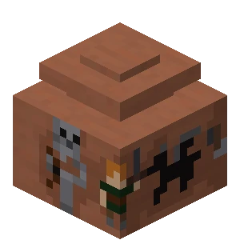
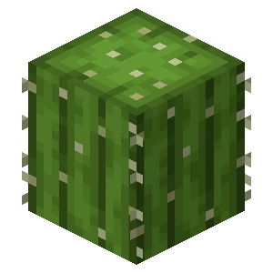

Considering the amount of ambiance fireflies would add to the game, and that they seemed like a mostly finalized feature during Minecraft Live 2021, this decision struck the community as odd.
There is no reason frogs have to eat fireflies, or why a frog with no other food sources couldn't have a small chance to eat one and be poisoned to illustrate this point, like they did with parrots.
However, the archaeology system added to the game lacks many of the features shown during its announcement, such as dirt blocks changing size as they are brushed, overworld interactions to decorate clay pots, pots with 8 slots for decorative sherds, baking pots on top of a fire, and a more detailed clay pot model.
One has to wonder why Mojang stripped the archaeology system from most of its advertised features for release, as one would expect this system to be more developed and polished than its prerelease footage after over two years.

It took them over two years to release a half-baked update
without news about a Badlands overhaul
Have passed
Badlands weren't a part of the Trails and Tales update.
Mojang has the resources to add all vote options. It's just marketing through manufactured engagement on social media.

We're still waiting.
without the Combat Test upgrades
Have passed
Since Mojang first released a "combat test" snapshot.
Their intention was to polish Java's "controversial" combat after the 1.9 update.
On October 15, 2022, Mojang announced the addition of camels to the game during Minecraft Live 2022.
The addition of camels came without any meaningful changes to deserts, despite there being a strong thematic link between the two.
Neither Savannas nor Deserts were a part of the Trails and Tales Update.
Mojang has the resources to add all vote options. It's just marketing through manufactured engagement on social media.
We're still waiting.
(Background art from the All of Fabric 5 modpack)
Fixed!
taken to fix the Damage Tilt bug.
Between bug creation and bugfix
Update 1.3.1 accidentally broke Minecraft's "Damage Tilt" feature.
On September 2020, they deemed the issue a "Won't Fix".
In October 2020, Shivaxi made a video explaining this bug and released a mod to fix it.
At 12:05PM on December 22, 2022, Mojang resolved the issue on their bug tracker.
On January 18, 2023, Java Snapshot 23w03a, the first release without this bug since its inception, finally made this fix accesible to players.